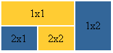
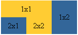
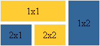
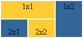
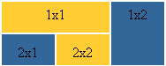

Главная | Оглавление | Словарь
Итак, мы остановились на такой таблице:

Давайте, подумаем, что же еще можно сделать с ней... хм... ну, например можно избавиться от пространства между ячейками таблицы:

Такая красота достигается с помощью атрибута cellspacing, равного нулю:
<table cellspacing=0>
<tr>
<td height="35" bgcolor="#FFCC33" colspan="2"> <center>1x1</center> </td>
<td width="50" bgcolor="#336699" rowspan="2"> <center>1x2</center> </td>
</tr>
<tr>
<td height="35" width="50" bgcolor="#336699"> <center>2x1</center> </td>
<td width="50" bgcolor="#FFCC33"> <center>2x2</center> </td>
</tr>
</table>
Можно наооборот увеличить пространство между ячейками, допустим пусть cellspacing=5, тогда получим такое:

Как видите, и то, и другое мы можем использовать как дизайнерский прием, т.к. даже уже на наших примерах это смотриться не стандартно.
Обычно атрибут cellspacing, рассматривается в руководствах и учебниках в паре с атрибутом cellpadding, который добаляет свободное пространство между содержимым ячейки и ее границами. Чтобы было видно нагляднее я для начала прижму текст ячеек первого ряда к верху, в нижнего - к низу, используя атрибут valign:

Теперь зададим атрибут cellpadding=5:

Вот теперь всем должно стать понятно, что такое пространство между содержимым ячейки и ее границами, и что делает тэг cellpadding. Сравним получившееся с предыдущей таблицей: мы прекрасненько видим, что у нас добавилось пространство по бокам, снизу и сверху, причем это пространство никакими картинками и текстом заполнено быть не может, как и пространство между ячейками, когда мы задаем cellspacing.
Для тех, кто все еще не может составить код сам - вот он (для последнего варианта таблицы):
<table cellpadding=5>
<tr>
<td height="35" bgcolor="#FFCC33" colspan="2" valign="top"> <center>1x1</center> </td>
<td width="50" bgcolor="#336699" rowspan="2" valign="top"> <center>1x2</center> </td>
</tr>
<tr>
<td height="35" width="50" bgcolor="#336699" valign="bottom"> <center>2x1</center> </td>
<td width="50" bgcolor="#FFCC33" valign="bottom"> <center>2x2</center> </td>
</tr>
</table>
Теперь я могу с чистой совестью завершить этот урок и перейти к следующему, в котором мы узнаем о вложенных таблицах.
Назад | Шагнуть на следующую ступеньку
|